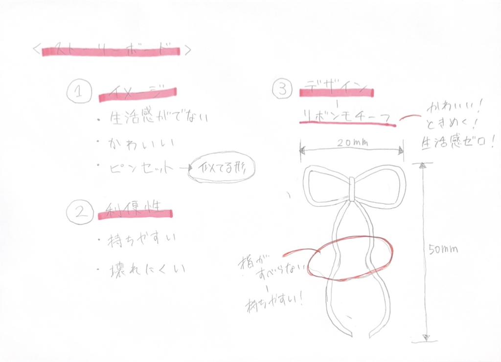
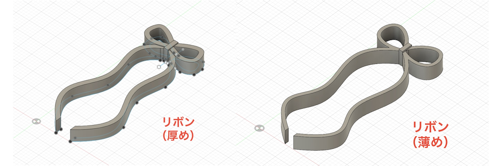

リボン
- デザインとストーリーボード -
➡︎ピンセットが生活の中でときめくものに進化！
- なぜ作ろうと思ったか -
私は片付けが得意ではなく、使ったものを出しっぱなしにする癖があります。でも部屋は可愛くなるべく綺麗に保ちたい…
しかし、ピンセットは出しておくと生活感がダダ漏れでときめかない！！
可愛くてときめく使いやすいピンセットが欲しい！！
と思ったからです。
- Fusionのデザイン -
- 完成した物 -

- 使った感想 -
- どちらも上手く機能した ➡︎薄い方は少し強度が心配、厚い方は安定感があり良い
- しっかりリボンの形になって可愛い
- 指が滑らない構造なので長時間使えそう ➡︎持ち直す必要がないのがとても良かった